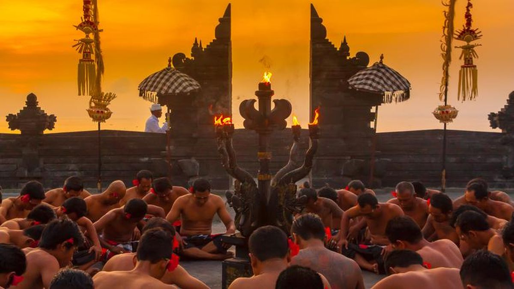

Tari Kecak merupakan salah satu tarian tradisional paling ikonik dari Bali, yang dikenal karena irama “cak-cak-cak” yang bersahut-sahutan dari puluhan penari pria. Tarian ini pertama kali dikembangkan pada tahun 1930-an dan sering dipentaskan di berbagai upacara maupun pertunjukan budaya untuk wisatawan.
Uniknya, Tari Kecak tidak diiringi alat musik sama sekali. Irama yang menggetarkan tercipta dari suara manusia dan tepukan tangan para penari yang duduk melingkar. Penampilan ini biasanya menggambarkan kisah epos Ramayana perjuangan Rama menyelamatkan Dewi Sita dari Rahwana, dibantu oleh Hanoman dan pasukan kera.
Selain nilai hiburannya, Tari Kecak juga memiliki makna spiritual. Formasi lingkaran para penari melambangkan harmoni dan kesatuan manusia dengan alam serta para dewa. Di beberapa desa, pementasan tari ini masih dilakukan sebagai bagian dari ritual penyucian atau persembahan bagi roh leluhur.